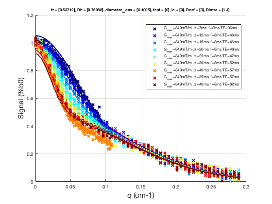
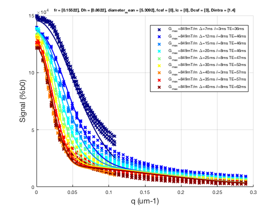

Contents
% Batch to process CHARMED data without qMRLab GUI (graphical user interface) % Run this script line by line %**************************************************************************
I- LOAD MODEL
%************************************************************************** % Create Model object Model = CHARMED; Model.options.S0normalization = 'Single T2 compartment'; % Load Diffusion Protocol Model.Prot.DiffusionData.Mat = txt2mat('Protocol.txt'); % Launch Fitting procedure % save Results in NIFTI %**************************************************************************
************** * Protocol.txt * read mode: auto * 826 data lines analysed * 3 header line(s) * 7 data column(s) * 0 string replacement(s) **************
II - Perform Simulations
%************************************************************************** % Generate MR Signal using analytical equation opt.SNR = 50; x.fr = .5; x.Dh = .7; % um2/ms x.diameter_mean = 6; % um x.fcsf = 0; x.lc=0; x.Dcsf=3; x.Dintra = 1.4; Model.Sim_Single_Voxel_Curve(x,opt) %**************************************************************************
ans =
fr: 0.5371
Dh: 0.7699
diameter_mean: 6.1005
fcsf: 0
lc: 0
Dcsf: 3
Dintra: 1.4000
S0_TE62: 0.9225
S0_TE57: 0.9459
S0_TE52: 0.9698
S0_TE47: 0.9944
S0_TE46: 1.0000
S0_TE36: 1.0513
T2: 200.0000
fh: 0.4629
residue: -4.8555e+03
SigmaNoise: 0.0142
 III - MRI Data Fitting
%************************************************************************** % load data data = struct; data.DiffusionData = load_nii_data('DiffusionData.nii.gz'); % plot fit in one voxel voxel = [32 29]; datavox.DiffusionData = squeeze(data.DiffusionData(voxel(1),voxel(2),:,:)); FitResults = Model.fit(datavox) Model.plotmodel(FitResults,datavox) % % all voxels % data.Mask=load_nii_data('Mask.nii.gz'); % FitResults = FitData(data,Model,1); % delete('FitTempResults.mat'); % % %************************************************************************** % %% V- SAVE % %************************************************************************** % % .MAT file : FitResultsSave_mat(FitResults,folder); % % .NII file : FitResultsSave_nii(FitResults,fname_copyheader,folder); % FitResultsSave_nii(FitResults,'DiffusionData.nii.gz'); %save('CHARMEDParameters.mat','Model');
FitResults =
fr: 0.1552
Dh: 0.8622
diameter_mean: 5.3092
fcsf: 0
lc: 0
Dcsf: 3
Dintra: 1.4000
S0_TE62: 1.2235e+05
S0_TE57: 1.2646e+05
S0_TE52: 1.3070e+05
S0_TE47: 1.3509e+05
S0_TE46: 1.3611e+05
S0_TE36: 1.4540e+05
T2: 151.4642
fh: 0.8448
residue: 1.7057e+05
SigmaNoise: 431.5808
 Check the results
Load them in qMRLab